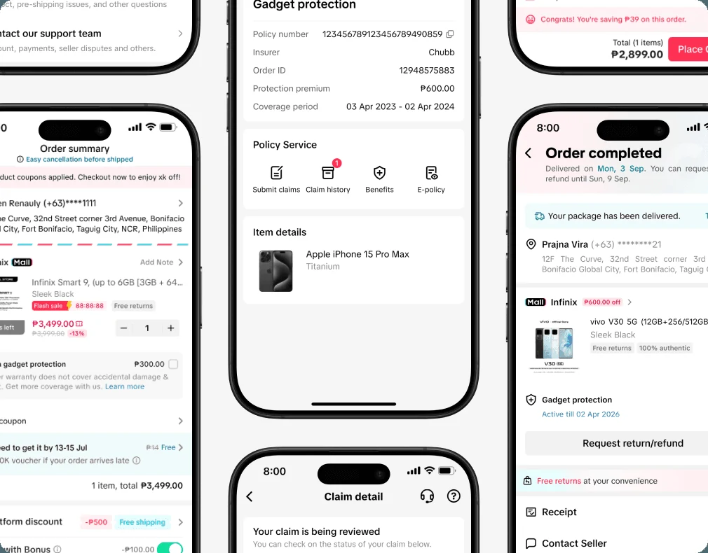
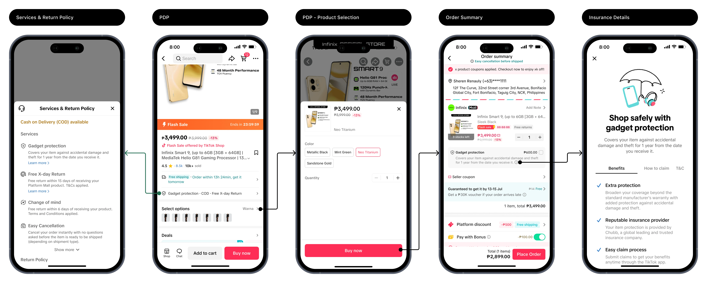
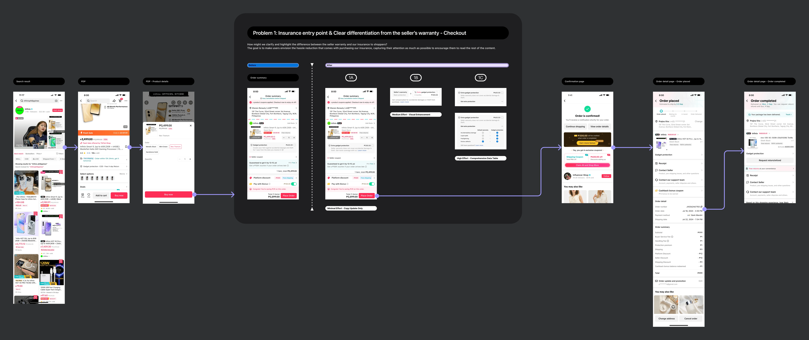
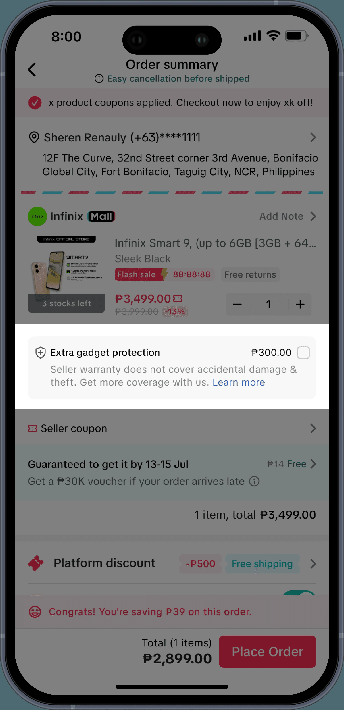
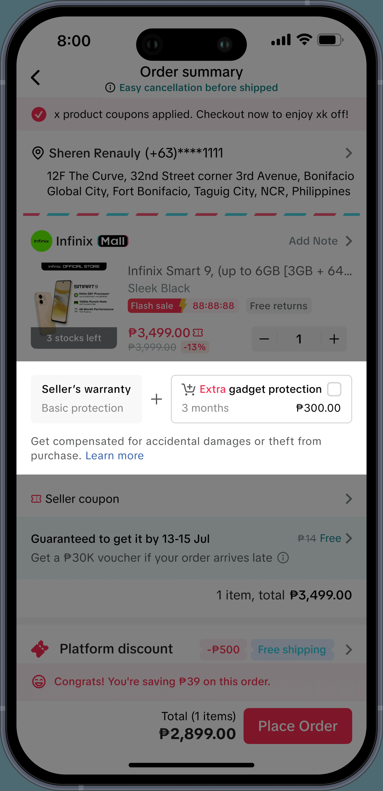
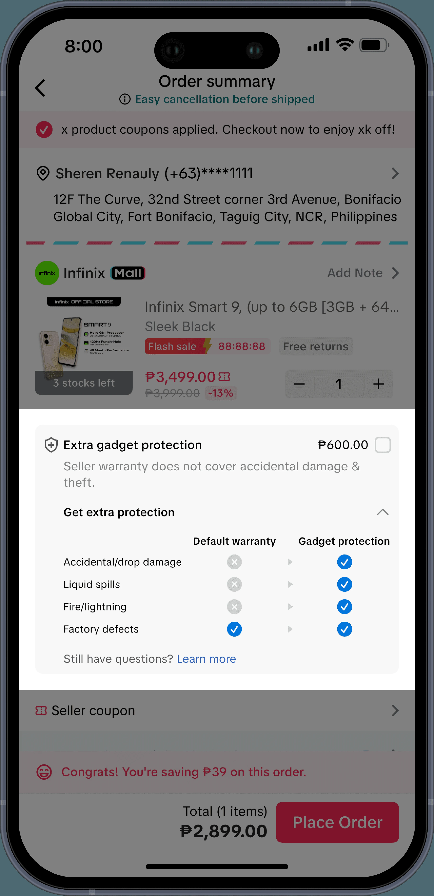

The Global Payment team of Bytedance/TikTok provides payment solutions - including payment acquisitions,
disbursements, transaction monitoring, payment method management, foreign exchange conversion, accounting,
reconciliations, and so on to ensure that our users have a smooth and secure payment experience on ByteDance
platforms including TikTok.
Scope & Goal: Security + Trust + Clarity
I optimized TikTok Shop's insurance experience (FinTech & E-commerce) for 5 countries across SEA & US,
boosting design localization, GWP (Gross Written Premium), and NPS (Net Promoter Score).
Responsibility
Research & competitor analysis
UX audits
Design optimization
aiming to improve product conversion rate and customer satisfaction.
[CONFIDENTIAL] This document is accessible only to employees of ByteDance/TikTok
Collaborate with BPO partners to conduct in-depth research on the insurance product design patterns in SEA(PH, ID, TH, MY) & the US
02
UX audit & Problem Definition:
Conduct a systematic UX audit for the existing insurance purchase process on TTS to identify user pain points and optimization opportunities.
03
Problem Alignment & Recommended Solution:
Based on the research findings, proposed design solution recommendations, and ensure the value of the problem and design solution through stakeholder feedback, ultimately aiming to optimize the TTS insurance-related experience.
What I worked on & achieved
[UNDER NDA] This project is protected by confidentiality agreements, but I would be happy to walk you through my process and the outcomes in a private interview for more details
🌍 Led BPO collaboration across 5 regions (PH, ID, MY, TH, US) to capture 800+ end-to-end competitor flows, delivering an annotated, reusable benchmarking system that significantly accelerated analysis efficiency.
Strategic Market Research
📊 Synthesized insights from 9+ core competitors into 2 key regional market reports, directly informing launch decisions and product iterations for MY, TH, and US markets.
Full-Funnel UX Audit
🔍 Independently audited TikTok Shop's insurance flows and identified 3 root causes for the decline in GWP & NPS, delivering a prioritized, action-ready issue list for the next release.
Conversion Optimization
🚀 Designed UX improvements for entry points and benefit visibility based on audit findings; expected to reduce dropout at the add-on step and drive recovery in GWP conversion and NPS.
Recommendations I received
What others say? Hear Hear 👂
Some kind words from amazing folks I have worked with ~
Stanley H (Colleague, Buddy/Mentor)
Product Designer at TikTok and Bytedance
It’s been great having Zijie as my intern buddy — he’s been incredibly helpful and really held his own for the insurance project in the SEA and US markets.
What he did well
Quick adaptability and learning Coming from a design system background, Zijie picked things up fast. Competitor analysis and research reporting can be a steep climb — you’re basically scrutinising every screen and interaction, collecting countless end-to-end flows, spotting patterns, finding themes, and then generating insights. He adapted to that process quickly and handled it with maturity.
Strong research and insight generation When I told him to “trust the process” (because it always feels messy at first), he took that to heart. Once he started organising the work, the patterns and themes became clear, and he was able to use them as solid insights. Initially he his scope was broad but that came with inexperience. With a little bit of guidance, he was sharp in distinguishing what really mattered from what didn’t — identifying the insights that could actually move the needle for business metrics. We ended up focusing on 3–4 key insights, which he presented really well to stakeholders. He even managed to spark further interest, leading to extra requests to explore pricing strategies and also do competitor analysis in the US market.
Proactive collaboration He’s also incredibly proactive — reaching out to BPOs across markets to gather the materials we needed, keeping momentum without being prompted. His meeting minutes were spot-on, capturing tasks and to-dos with clarity and speed.
Overall, Zijie showed strong adaptability, initiative, and attention to detail. He learned quickly, engaged deeply with the process, and delivered meaningful outputs that got stakeholder buy-in. I have no doubts with more experience in the field Zijie will grow into an established and remarkable product designer.
Private case study
SEA & US Insurance
This case study contains confidential project details. Enter the access password to view the full research, problem framing, and design proposals.
Summary
Work Overview

Context
ByteDance/TikTok's Global Payment Team (PIPO)
Provides comprehensive payment infrastructure to ensure seamless transaction experiences across ByteDance platforms including TikTok.
Scope & Goal: Security + Trust + Clarity
I optimized TikTok Shop’s insurance experience (FinTech & E-commerce) for 5 countries across SEA & US, boosting design localization, GWP (Gross Written Premium), and NPS (Net Promoter Score).
Responsibility
Research & competitor analysis
UX audits
Design optimization
aiming to improve product conversion rate and customer satisfaction.
[CONFIDENTIAL] This document is accessible only to employees of ByteDance/TikTok
Project Timeline
Project Details
01
Competitor Research & Analysis:
Collaborate with BPO partners to conduct in-depth research on the insurance product design patterns in SEA(PH, ID, TH, MY) & the US
02
UX audit & Problem Definition:
Conduct a systematic UX audit for the existing insurance purchase process on TTS to identify user pain points and optimization opportunities.
03
Problem Alignment & Recommended Solution:
Based on the research findings, proposed design solution recommendations, and ensure the value of the problem and design solution through stakeholder feedback, ultimately aiming to optimize the TTS insurance-related experience.
Research & Analysis
🔴 P0 - Problem 1Pre-purchase
(SEA & US) Clarify the differences between insurance and warranty
Context
Through a UX audit, I firstly identified a critical ambiguity where users struggle to distinguish between paid insurance and free warranty—an insight later validated by data showing a clear negative impact on conversion.
After aligning with stakeholders, the potential impact was recognized. However, due to the current lack of A/B testing capabilities, we reviewed the prioritization and ROI, deciding to schedule this optimization for Q4 2025.
Problem
🎨 Identify by UX
Cognitive Ambiguity
Users struggle to distinguish between Platform Insurance (paid) and Seller Warranty (included).
This ambiguity creates cognitive load, forcing users to investigate further or hesitate, rather than making a quick purchase decision.
→📊 Validated by DA
Funnel Deterioration
Prioritizing the insurance module on the PDP increased module clicks but negatively impacted the overall purchase funnel.
The data suggests users are staying longer due to confusion, not engagement.

👆 Existing Insurance Flow (SEA) 👆
Impact:
🎨 UX Hypothesis
Business & trust risks
Potential decrease in Gross Written Premium (GWP).
Increased risk of user mistrust, misunderstandings (e.g., suspected double charging), and subsequent disputes or refunds.
→📊 DA Evidence
Key Data Metrics Decline
Conversion Rate: Drop in "PDP Visit" to "Buy Now Click" by -0.57% (p=0.09).
User Loss: Statistically significant drop in converting users (PDP Visitors to Buyers) by -0.22%.
Negative Engagement: Average time on PDP increased from 30min to 33min), but this was driven by a +25% increase in exit behaviors (clicking back or swiping away).
How might we clarify and highlight the difference between the seller warranty and our insurance to shoppers?
Opportunity
Clarify Value Proposition
Explicitly highlight the differences between Insurance and Warranty on the PDP and Order Summary. Display price and key benefits upfront to eliminate ambiguity.
Reduce Friction
Provide sufficient information on the main page to enable decision-making reducing/without forcing users to click into a secondary page, thereby smoothing the friction in the purchase path.
Goal
Visualize the Benefit
Help users immediately picture the "hassle-free" experience (hassle reduction) that comes with the insurance.
Capture Attention
Create a strong visual hook to grab user interest instantly among other information.
Encourage Engagement
Motivate users to read the content and understand the insurance value.
Solution🔴 P0 - Problem 1
Design Proposals

👆 Full Pre-purchase Flow (Updated); [Scroll Horizontally to See More ↔️] 👆

Option A: Minimal Effort - Copy Update Only
✅ Pros:
Preserves existing design: Maximizes the retention of current design decisions.
Simple and straightforward: Maintains a minimalist UI without adding visual clutter.
❌ Cons:
Too Conservative: The change might be too subtle.
Habituation (Banner Blindness): Users, especially returning ones, often scan past text-heavy areas out of habit. A subtle copy update lacks the visual disruption needed to break this pattern and capture their attention.
Low Engagement: Relying solely on text (copy) runs the risk that users still won't read or process the information.

Option B: Medium Effort - Visual Enhancement
✅ Pros:
Informative & Scannable: Provides sufficient information but in a more visual format compared to Option A.
Better Readability: Much easier for users to digest than a block of text.
❌ Cons:
Development Cost: Requires building new UI components.
Learning Curve: Potential friction if the new pattern is unfamiliar to users.

Option C: High Effort - Comprehensive Data Table
✅ Pros:
Highly Informative & Flexible: Offers maximum detail with the option to collapse.
Straightforward: The tabular format is easy to scan.
❌ Cons:
Cognitive Load: Risk of information overload.
Intrusiveness: Could be perceived as annoying or distracting by users.
Potential Solution Impacts
*Note - Since this optimization is scheduled for Q4 A/B testing, these are the projected improvements based on current negative baselines.
Recover Conversion Funnel
Outcome: Eliminate the cognitive friction caused by ambiguity to recover the lost user throughput.
Metric: Reverse the negative trend in PDP Visit to Buy Now Click (Target: Recover the -0.57% drop) and Visitor to Buyer Conversion (Target: Recover the -0.22% drop).
Correct User Engagement Behavior
Outcome: Reduce "Negative Dwell Time" (confusion-driven stay) and decrease abandonment.
Metric: Decrease Negative Exit Behaviors (Target: Reduce the current +25% spike in "Click Back" or "Swipe Away" actions).
Drive Business Growth (GWP)
Outcome: By clarifying the unique value of paid insurance vs. free warranty, users will be more confident in adding insurance to their cart.
Metric: Increase Insurance Attach Rate (Purchase Rate) and GWP (Gross Written Premium).
Mitigate Post-Purchase Disputes
Outcome: Clear differentiation upfront prevents users from mistakenly purchasing insurance or assuming it was free, reducing "accidental" purchases.
Metric: Decrease Refund/Dispute Rate related to "Unrecognized Charge" or "Double Charging".
Scroll down to continue to Problem 2
Research & Analysis
🔴 P0 - Problem 2Post-purchase
(SEA) Distinguish the Protection Policy and Insurance Claim Info
Context
Insurance information involves two distinct user-experience paths—policy status and claim status. Unlike us, competitors employ progressive disclosure to manage user attention and display these two paths separately.
After aligning with stakeholders, the proposal was well received. However, stakeholders consider improving insurance purchase flow with a higher priority than claims experience, so this optimization was scheduled for Q4 follow-up.
Post-purchase Experience
Policy: The contract you bought. It is the proof that you have protection (e.g., "Active" or "Expired").
Claim: The request you make when something goes wrong. It is the process of asking the insurance company for money or repairs.
Problem
🎨 UX Identified
Ambiguous Information Architecture
The user flows for Protection Policies and Insurance Claims are not clearly distinguished.
Confusing progress indicators fail to signal the independence of these two functions, creating a mismatch with the user's mental model.
👤 User Pain Point
Navigation Friction
Users struggle to discern between managing a policy and tracking a claim due to the lack of separation in the interface.